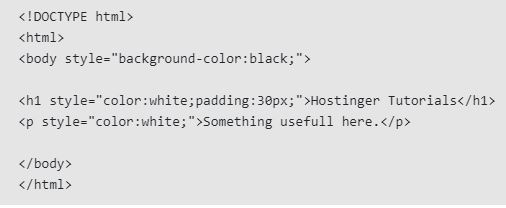

Brad Hurrell
423044
Inline CSS
Inline CSS is used to style a specific HTML element. For this CSS style, you’ll only need to add the style attribute to each HTML tag, without using selectors.
This CSS type is not really recommended, as each HTML tag needs to be styled individually. Managing your website may become too hard if you only use inline CSS.
